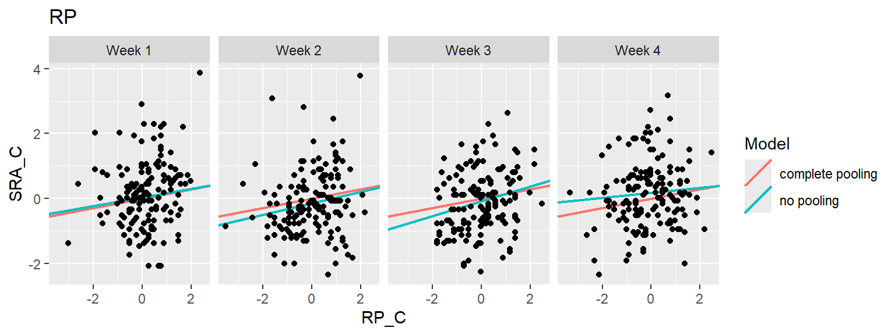

Threat Imminence And Everyday Altruism During The COVID-19 Pandemic
Author
Stephen Pierzchajlo
Research Question
Is increased COVID-19 threat over time associated with increased altruism?
Background
There is evidence to suggest that humans and other mammals respond to potentially threatening events in a graded manner that depends on how imminent they perceive the threat to be (Fanselow & Lester, 1988). Imminence refers both to spatial proximity (whether something is far or close in space), as well as temporal proximity (something happening weeks from now versus something happening now). Distal (unpredictable) threats are typically associated with risk assessment and appraisal strategies, and usually trigger states of generalised stress. Conversely, imminent (predictable) threats trigger rapid avoidance responses and are usually associated with states of acute anxiety and panic (Blanchard & Blanchard, 1990; Fanselow & Lester, 1988; Mobbs et al., 2020). Importantly, there is recent evidence suggesting that defensive states triggered by imminent danger may promote altruistic motivation (Vieira et al., 2020a).
The data I will be analysing comes from a recent study (Vieira et al., 2020b) conducted by Dr. Joana Vieira at Karolinska Instiutet to test how COVID-19 threat imminence impacts acts of everyday altruism. The pandemic represented a unique proxy for threat imminence as the number of cases and deaths were increasing exponentially and therefore represented a constantly approaching threat. Joana hypothesised that increased COVID-19 threat over time would be associated with an increase in self-reported altruistic acts. She predicted that measurements associated with imminent threats during the pandemic would be associated with an increase in altrustic acts, while measurements associated with distal threats during the pandemic would not be associated with self-reported altruism.
A paper is currently being prepared for publication (Vieira et al., 2020b) using data for my current project here, but the paper uses only frequentist analyses. I thought this would be the perfect dataset to try a complimentary Bayesian analysis and use some techniques learned in class. Additionally, the Bayesian analyses performed here will be included as a suppimentary manuscript that readers can access via the Open Science Framework (osf.io) to compare with the frequentist analysis.
Data Collection
Data for this analysis came from a study conducted online between March 24th and April 14th of 2020. Each week, 150 different people from the United States were surveyed about a range of self-reported behaviours and psychological states. Therefore, a total of 600 people were included in the study, collected over 4 data acquisition periods. For the purposes of this analysis, only the measurements directly associated with the Bayesian model will be discussed. The dependent measure for this study was each participants’ self-reported altruism (SRA) score. The main predictors we collected and had hypotheses related to were: COVID-19 Risk Perception (RP), Percieved Stress Score (PSS), Anxiety, and Depression. We also collected each participants’ age, gender, employment status, and financial situation. These latter 4 predictors had no prior hypothesis tied to them, but we thought each could contribute to predicting SRA. Later, each predictor will be very briefly described as it relates to the hypothesis.
COVID-19 Data Aquisition
To get a sense of where the United States was in terms of overall COVID-19 cases during our data acquisition period, I obtained COVID-19 related data from github for those 4 weeks. I then created a dataframe that contains only the weeks for which the data for the experiment took place. The code chunk below puts this dataframe together.
The dataframe above shows just the first 6 rows. Each row contains the total COVID-19 cases and deaths (and some per capita information) in a specific State during one of the four Weeks we collected data. Later, I will plot some of this information for interests sake.
Survey Data Pre-processing
Below I read in the raw survey data from our study, and then combined/removed some data. The steps taken and data removed can be looked at more closely in the code chunk below. Some of the data are recoded as well and consists of variables that are used in the study but not used in this assignment.
Please note that the data are available on the osf page for this study: https://osf.io/8w6x2/
The file on the osf page is called “CVA_full.csv”.
Next, the COVID-19 data and survey data were combined to form a single dataframe. A bit later, I will plot both total cases per State, as well as self-reported altruism score per State over the course of each Week that data acquisition took place.
# Join COVID survey and COVID U.S.A data.CVA_full <-full_join(CVA_new, Total_Cases_And_Deaths2, by=NULL)# Remove NA SubjectsCVA_full <-filter(CVA_full, !(SubID =="NA"))# Display dataframe form analysishead(CVA_full)
SubID ID ProlificID Age SEL Country State relative friend
1 287 139 5d288c5cc3c61e001781c77d 19 2 2 AK NA NA
2 384 85 5c802d06948f9c00017b3eb2 35 4 2 AK 3 3
3 87 196 58af423e6590840001566cc7 32 3 2 AL NA NA
4 198 48 5e72665f88152e1aecef02ff 20 4 2 AL NA NA
5 240 90 5cbdc86714b3cb0001f035bb 38 2 2 AL NA NA
6 333 34 5dab9bb23dd8f50015d256d5 46 1 2 AL 4 4
acquaint stranger ingroup outgroup ownn othern political identify help
1 NA NA NA NA 3 3 2 2 3
2 1 1 2 1 1 3 1 1 1
3 NA NA NA NA 3 4 1 3 3
4 NA NA NA NA 2 3 1 3 1
5 NA NA NA NA 3 3 3 3 3
6 4 4 4 4 3 3 3 3 3
socialm personalcom mainnews indnews personalexp alc1 alc2 alc3 control SRA
1 4 3 5 1 1 4 5 3 4 47
2 1 4 3 1 3 3 2 1 4 56
3 5 5 5 3 1 4 3 3 4 45
4 4 2 5 3 1 1 1 1 4 36
5 3 3 1 1 1 1 1 1 4 38
6 3 3 4 4 2 2 2 1 4 77
donations RP PBI PBI_S PBI_R PSS Depression Anxiety Stress Week Employment
1 12 40 5.75 6 5.5 29 16 8 18 Week 2 Student
2 14 49 5.75 5 6.5 25 10 2 16 Week 3 Unemployed
3 10 28 7.00 7 7.0 12 0 0 2 Week 1 Employed
4 9 58 4.75 4 5.5 28 14 0 8 Week 2 Student
5 10 41 7.00 7 7.0 21 14 4 10 Week 2 Employed
6 17 48 7.00 7 7.0 34 24 14 34 Week 3 Unemployed
Gender2 Education N Total_State_Cases Total_State_Deaths
1 Female High school or below 1 119 3
2 Male Graduate degree 1 193 6
3 Male High school or below 1 224 0
4 Female High school or below 1 1001 10
5 Female High school or below 1 1001 10
6 Female High school or below 1 2079 49
Total_US_Cases Total_US_Deaths Cases_Per_10000 Cases_Per_100000
1 165282 4270 1.621249 16.21249
2 384281 14959 2.629421 26.29421
3 45952 786 0.456340 4.56340
4 165282 4270 2.039269 20.39269
5 165282 4270 2.039269 20.39269
6 384281 14959 4.235405 42.35405
Deaths_Per_10000 Deaths_Per_100000
1 0.04087182 0.4087182
2 0.08174365 0.8174365
3 0.00000000 0.0000000
4 0.02037232 0.2037232
5 0.02037232 0.2037232
6 0.09982437 0.9982437
The dataframe consists of 601 columns, and is what I will use for my Bayesian analysis. Each row is data collected from one participant, and also contains data about the number of cases and deaths for the week the data was collected for the State each participant comes from. There are many additional variables as well that are not important for the current analysis.
Measurement Scales
Their were 5 major scales that make up the dependent and independent measures used in the survey study, and they will briefly be discussed here. The Self-Reported Altruism Scale (SRA; Rushton et al., 1981) asks participants to rate the frequency with which they engaged in various altruistic acts. COVID-19 Risk Perception (RP) was assessed using a modified scale from Wise et al. (2020) and asks participants about their percieved risk of COVID-19 related infection and related personal/financial worries. Defensive emotions were indexed via the Percieved Stress Scale (PSS-10; Cohen et al., 1983) and the Depression Anxiety Stress Scale (DASS-21; Lovibond & Lovibond, 1995). The PSS-10 asks participants about experiences of stress related to unpredictable and uncontrollable events in their lives. The DASS-21 contains an anxiety scale related to acute anxiety/panic and autonomic arrousal. The DASS-21 also contains questons related to experienced depressive episodes, and these depression-related questions are also included as a seperate predictor in the model.
Below, I created some graphs to help visualise the distribution of scores for each measure. These are simply to help visualise how participants responded, and contain the responses from all 600 individuals.
# Filter questionnaires only.CVA_Subset <- CVA[, c("PS1", "PS2", "PS3", "PS4", "PS5", "PS6", "PS7", "PS8", "PS9", "PS10", "D1", "D2", "D4", "D6", "D7", "D8", "D9", "D11", "D12", "D14", "D15", "D18", "D19", "D20", "RP1", "RP2", "RP3", "RP4", "RP5", "RP6", "RP7", "RP8", "RP9", "RP10", "SRA1", "SRA2", "SRA3", "SRA4", "SRA5", "SRA6", "SRA7", "SRA8", "SRA9", "SRA10", "SRA11", "SRA12", "SRA13", "SRA14", "SRA15", "SRA16", "SRA17", "SRA18", "SRA19", "SRA20")]#Reverse scored item PS4.CVA_Subset$PS4 <-ifelse(CVA_Subset$PS4 =="0", 4,ifelse(CVA_Subset$PS4 =="1", 3,ifelse(CVA_Subset$PS4 =="2", 2,ifelse(CVA_Subset$PS4 =="3", 1, 0))))#Reverse scored item PS5.CVA_Subset$PS5 <-ifelse(CVA_Subset$PS5 =="0", 4,ifelse(CVA_Subset$PS5 =="1", 3,ifelse(CVA_Subset$PS5 =="2", 2,ifelse(CVA_Subset$PS5 =="3", 1, 0))))#Reverse scored item PS7.CVA_Subset$PS7 <-ifelse(CVA_Subset$PS7 =="0", 4,ifelse(CVA_Subset$PS7 =="1", 3,ifelse(CVA_Subset$PS7 =="2", 2,ifelse(CVA_Subset$PS7 =="3", 1, 0)))) #Reverse scored item PS8.CVA_Subset$PS8 <-ifelse(CVA_Subset$PS8 =="0", 4,ifelse(CVA_Subset$PS8 =="1", 3,ifelse(CVA_Subset$PS8 =="2", 2,ifelse(CVA_Subset$PS8 =="3", 1, 0))))CVA_PS <- CVA_Subset[, 1:10]CVA_D <- CVA_Subset[, 11:24]CVA_RP <- CVA_Subset[, 25:34]CVA_SRA <- CVA_Subset[, 35:54]CVA_PS_Long <-gather(CVA_PS, key = PS, value ="Measure", PS1:PS10)CVA_D_Long <-gather(CVA_D, key = D, value ="Measure", D1:D20)CVA_RP_Long <-gather(CVA_RP, key = RP, value ="Measure", RP1:RP10)CVA_SRA_Long <-gather(CVA_SRA, key = SRA, value ="Measure", SRA1:SRA20)# PSS graphing dataframe.CVA_PS_Long$Question <-case_when(CVA_PS_Long$PS =="PS1"~"How often have you been upset because of something that happened unexpectedly?",CVA_PS_Long$PS =="PS2"~"how often have you felt you were unable to control the important things in your life?",CVA_PS_Long$PS =="PS3"~"how often have you felt nervous and stressed?",CVA_PS_Long$PS =="PS4"~"how often have you felt confident about your ability to handle your personal problems?",CVA_PS_Long$PS =="PS5"~"how often have you felt that things were going your way?",CVA_PS_Long$PS =="PS6"~"how often have you found that you could not cope with all the things you had to do?",CVA_PS_Long$PS =="PS7"~"how often have you been able to control irritations in your life?",CVA_PS_Long$PS =="PS8"~"how often have you felt that you were on top of things?",CVA_PS_Long$PS =="PS9"~"how often have you been angered because of things that were outside your control?",CVA_PS_Long$PS =="PS10"~"how often have you felt difficulties were pilling up so high that you could not overcome them?",TRUE~as.character(CVA_PS_Long$PS))CVA_PS_Long$Answer <-case_when(CVA_PS_Long$Measure ==0~"1. Never",CVA_PS_Long$Measure ==1~"2. Almost Never",CVA_PS_Long$Measure ==2~"3. Sometimes",CVA_PS_Long$Measure ==3~"4. Fairly Often",CVA_PS_Long$Measure ==4~"5. Very Often",TRUE~as.character(CVA_PS_Long$Measure))# Depression graphing dataframe.CVA_D_Long$Question <-case_when(CVA_D_Long$D =="D1"~"I found it hard to wind down",CVA_D_Long$D =="D2"~"I was aware of dryness of my mouth",CVA_D_Long$D =="D4"~"I experienced breathing difficulty",CVA_D_Long$D =="D6"~"I tended to overreact to situations",CVA_D_Long$D =="D7"~"I experienced trembling",CVA_D_Long$D =="D8"~"I felt I was using a lot of nervous energy",CVA_D_Long$D =="D9"~"I was worried about situations where I might panic and make a fool of myself",CVA_D_Long$D =="D11"~"I found myself getting agitated",CVA_D_Long$D =="D12"~"I found it difficult to relax",CVA_D_Long$D =="D14"~"I was intolerant of anything that kept me from getting on with what I was doing",CVA_D_Long$D =="D15"~"I felt I was close to panic",CVA_D_Long$D =="D18"~"I felt I was rather touchy",CVA_D_Long$D =="D19"~"I was aware of the action of my heart in the absence of physical exertion",CVA_D_Long$D =="D20"~"I felt scared without any good reason",TRUE~as.character(CVA_D_Long$D))CVA_D_Long$Answer <-case_when(CVA_D_Long$Measure ==0~"1. Did not apply to me at all",CVA_D_Long$Measure ==1~"2. Applied to me to some degree",CVA_D_Long$Measure ==2~"3. Applied to me to a great degree",CVA_D_Long$Measure ==3~"4. Applied to me most of the time",TRUE~as.character(CVA_D_Long$Measure))# Risk Perception graphing dataframe.CVA_RP_Long$Question <-case_when(CVA_RP_Long$RP =="RP1"~"How likely do you think you are to catch the virus?",CVA_RP_Long$RP =="RP2"~"How badly do you think your health will be affected if you do catch the virus?",CVA_RP_Long$RP =="RP3"~"How badly do you think you will be affected economically if you specifically catch the virus?",CVA_RP_Long$RP =="RP4"~"How badly do you think you will be affected by the global effects of the virus?",CVA_RP_Long$RP =="RP5"~"How likely do you think it is that a loved one will become infected?",CVA_RP_Long$RP =="RP6"~"How likely do you think the average person in your neighbourhood is to become infected?",CVA_RP_Long$RP =="RP7"~" How likely do you think the average person in your state is to become infected?",CVA_RP_Long$RP =="RP8"~"How likely do you think the average person in your country is to become infected?",CVA_RP_Long$RP =="RP9"~"If you do contract the virus, how likely do you think it is that you will pass it on to someone else?",CVA_RP_Long$RP =="RP10"~"If you do contract the virus and pass it on to someone else, how badly do you think they would be affected?",TRUE~as.character(CVA_RP_Long$RP))CVA_RP_Long$Answer <-case_when(CVA_RP_Long$Measure ==1~"1 - Min",CVA_RP_Long$Measure ==2~"2",CVA_RP_Long$Measure ==3~"3",CVA_RP_Long$Measure ==4~"4",CVA_RP_Long$Measure ==5~"5",CVA_RP_Long$Measure ==6~"6",CVA_RP_Long$Measure ==7~"7 - Max",TRUE~as.character(CVA_RP_Long$Measure))# Self-Reported Altruism graphing dataframe.CVA_SRA_Long$Question <-case_when(CVA_SRA_Long$SRA =="SRA1"~"I have helped push a stranger’s car out of the snow",CVA_SRA_Long$SRA =="SRA2"~"I have given directions to a stranger",CVA_SRA_Long$SRA =="SRA3"~"I have made change for a stranger",CVA_SRA_Long$SRA =="SRA4"~"I have given money to a charity",CVA_SRA_Long$SRA =="SRA5"~"I have given money to a stranger who needed it",CVA_SRA_Long$SRA =="SRA6"~"I have donated goods or clothes to a charity",CVA_SRA_Long$SRA =="SRA7"~"I have done volunteer work for a charity",CVA_SRA_Long$SRA =="SRA8"~"I have donated blood",CVA_SRA_Long$SRA =="SRA9"~"I have helped carry a stranger’s belongings",CVA_SRA_Long$SRA =="SRA10"~"I have delayed an elevator and held the door open for a stranger",CVA_SRA_Long$SRA =="SRA11"~"I have allowed someone to go ahead of me in a lineup",CVA_SRA_Long$SRA =="SRA12"~"I have given a stranger a lift in my car",CVA_SRA_Long$SRA =="SRA13"~"I have pointed out a clerk’s error in undercharging me for an item",CVA_SRA_Long$SRA =="SRA14"~"I have let a neighbour whom I didn’t know too well borrow an item of some value to me",CVA_SRA_Long$SRA =="SRA15"~"I have bought ‘charity” Christmas cards deliberately because I knew it was a good cause.",CVA_SRA_Long$SRA =="SRA16"~"I have helped a classmate who I did not know that well with a homework assignment when my knowledge was greater",CVA_SRA_Long$SRA =="SRA17"~"I have before being asked, voluntarily looked after a neighbour’s pets or children without being paid for it",CVA_SRA_Long$SRA =="SRA18"~"I have offered to help a handicapped or elderly stranger across a street",CVA_SRA_Long$SRA =="SRA19"~"I have offered my seat on a bus or train to a stranger who was standing",CVA_SRA_Long$SRA =="SRA20"~"I have helped an acquaintance to move households",TRUE~as.character(CVA_SRA_Long$SRA))CVA_SRA_Long$Answer <-case_when(CVA_SRA_Long$Measure ==1~"1. Never",CVA_SRA_Long$Measure ==2~"2. Once",CVA_SRA_Long$Measure ==3~"3. More Than Once",CVA_SRA_Long$Measure ==4~"4. Often",CVA_SRA_Long$Measure ==5~"5. Very Often",TRUE~as.character(CVA_SRA_Long$Measure))
I have included histograms of the dependent and independent variables to help get a sense of how they are distributed, and whether the variables could be considered for transformation.
As can be seen, some distributions are relatively normal (e.g. SRA, RP), while others are relatively skewed (Anxiety, Depression). Because the original study transformed all of these variables (justification provided later), that’s the strategy I will use too in order to keep my analysis consistent with the original.
Altruism and Risk Perception over 4 weeks
I first wanted to see whether Self-Reported Altrusim (SRA) was affected by the week it was collected. We hypothesized that SRA would increase linearly from week 1 to week 4 in accordance to increasing COVID-19 threat. As can be seen below however, this was not the case. While I considered making very simple models to assess how week predicted SRA and Risk Perception (RP), I will forego that here as these measures were clearly unaffected.
#Plot main variables over 4 week period#create function to have mean estimate and sd in a point plotdata_summary <-function(x) { m <-mean(x) ymin <- m-sd(x)/2 ymax <- m+sd(x)/2return(c(y=m,ymin=ymin,ymax=ymax))} #SRA<- ggplot(CVA_full, aes(x=Week, y = SRA, color = Week)) +# geom_point()+#geom_jitter(aes(color = Week), width = 0.18)+#stat_summary(fun.data=data_summary, color="black")+#scale_color_brewer(palette = "Pastel2")+# theme_bw()+# theme(legend.position = "none")+# theme(text = element_text(size=18))+# labs(y = "SRA")# SRA#create dataframes per variable to plot line connecting meansSRA_week <-group_by(CVA_full, Week) %>%summarise(SRA =mean(SRA))SRA_week <-data.frame(SRA_week)RP_week <-group_by(CVA_full, Week) %>%summarise(RP =mean(RP))RP_week <-data.frame(RP_week)PSS_week <-group_by(CVA_full, Week) %>%summarise(PSS =mean(PSS))PSS_week <-data.frame(PSS_week)# na.rm removes Pacific Northwest person. Otherwise, Week 2 estimate is NA in Cases_week dataframe.Cases_week <-group_by(CVA_full, Week) %>%summarise(Total_State_Cases =mean(Total_State_Cases, na.rm =TRUE))Cases_week <-data.frame(Cases_week)Cases_state <-ggplot(Cases_week, aes(x=Week, y = Total_State_Cases, group =1)) +geom_line() +geom_point() +ylab("Total Cases")+theme_pubr()+theme(text =element_text(size=18)) RP_line <-ggplot(CVA_full, aes(x=Week, y = RP, color = SubID)) +geom_jitter(aes(color = Week), width =0.18)+geom_line(data=RP_week, aes(x=Week, y=RP, group =1), color='black', size =1, alpha =0.5) +geom_point(data=RP_week, aes(x=Week, y=RP), color='black', size =2, alpha =0.5) +scale_color_brewer(palette ="Pastel2")+theme_pubr()+theme(legend.position ="none")+theme(text =element_text(size=18))SRA_line <-ggplot(CVA_full, aes(x=Week, y = SRA, color = SubID)) +geom_jitter(aes(color = Week), width =0.18)+geom_line(data=SRA_week, aes(x=Week, y=SRA, group =1), color='black', size =1, alpha =0.5) +geom_point(data=SRA_week, aes(x=Week, y=SRA), color='black', size =2, alpha =0.5) +scale_color_brewer(palette ="Pastel2")+theme_pubr()+theme(legend.position ="none")+theme(text =element_text(size=18))ggarrange(RP_line, SRA_line, Cases_state)
The bottom graph shows that average COVID-19 cases clearly increased from week to week, exponentially so when we include the final week. Both COVID-19 Risk Perception and Self-Reported Altruism did not change over this time course. It may be the case that people really weren’t concerned enough with the magnitude of the threat of the virus, and this may be why Self-Reported Altruism did not change either. It may also be the case that we did not collect data for a long enough time, or that we picked a time when COVID-19 threat was too recent.
Association between SRA and each predictor per week.
When I build my model below I will include week as a random effect. Therefore, I wanted to look at the association between SRA and each predictor per week. I decided not to perform any statistical analysis here (i.e. correlations), as this was just a check out of interest before running the model. The line fit to each plot is a simple linear regression line fit to each week and is not based on a random effects linear model. I think this is fine however, as I just want to get a sense of how each of these relationships changes per week.
Altruism and Risk Perception
## Plot the correlation between SRA and RP per weekggplot(CVA_full, aes(x = RP, y = SRA, color = Week))+geom_point()+geom_smooth(method = lm, se=FALSE, color ="black", size =0.5)+facet_wrap(~Week, nrow =1)+scale_color_brewer(palette ="Pastel2")+theme_pubr()+theme(text =element_text(size=18))+theme(legend.position ="none") +theme(text =element_text(size=10))
It looks like risk perception might be a good predictor of SRA as it linearly increases regardless of the week it was collected.
Altruism and Perceived Stress Score (PSS)
## Plot the correlation between SRA and RP per weekggplot(CVA_full, aes(x = PSS, y = SRA, color = Week))+geom_point()+geom_smooth(method = lm, se=FALSE, color ="black", size =0.5)+facet_wrap(~Week, nrow =1)+scale_color_brewer(palette ="Pastel2")+theme_pubr()+theme(text =element_text(size=18))+theme(legend.position ="none") +theme(text =element_text(size=10))
No strong relationship between SRA and PSS is apparent here. PSS indexes more generalised stress, and we predicted that it would not be associated with SRA.
Altruism and DASS-21 Anxiety
## Plot the correlation between SRA and RP per weekggplot(CVA_full, aes(x = Anxiety, y = SRA, color = Week))+geom_point()+geom_smooth(method = lm, se=FALSE, color ="black", size =0.5)+facet_wrap(~Week, nrow =1)+scale_color_brewer(palette ="Pastel2")+theme_pubr()+theme(text =element_text(size=18))+theme(legend.position ="none") +theme(text =element_text(size=10))
Our hypothesis was that anxiety about unpredictable/proximal threats would predict SRA, and that appears to be the case here.
Altruism and DASS-21 Depression
## Plot the correlation between SRA and RP per weekggplot(CVA_full, aes(x = Depression, y = SRA, color = Week))+geom_point()+geom_smooth(method = lm, se=FALSE, color ="black", size =0.5)+facet_wrap(~Week, nrow =1)+scale_color_brewer(palette ="Pastel2")+theme_pubr()+theme(text =element_text(size=18))+theme(legend.position ="none") +theme(text =element_text(size=10))
Depression does not seem to be associated with SRA.
Additional Predictors
There was additonal data collected that had no explicit hypotheses associated with them, but that we thought might still predict altruism in general. After the initial model is fit, these predictors will be tested and then added in an attempt to improve the model’s fit. Below, I will show a few plots of these additional predictors: age, gender, employment status, and financial situation.
#create dataframes per variable to plot line connecting means, grouping by employment as wellSRA_week_emp <-group_by(CVA_full, Week, Employment) %>%summarise(SRA =mean(SRA))SRA_week_emp <-data.frame(SRA_week_emp)
#create dataframes per variable to plot line connecting means, grouping by gender SRA_week_gender <-group_by(CVA_full, Week, Gender2) %>%summarise(SRA =mean(SRA))SRA_week_gender <-data.frame(SRA_week_gender)
Above is a histogram of the distribution of the ages of the participants for each week data were collected. Below I plot the other 3 predictors per week.
Week_1_Graph <-ggarrange(GenderWeek1Plot, SELWeek1Plot, EmploymentWeek1Plot, nrow =3)annotate_figure(Week_1_Graph,top =text_grob("Week 1", color ="black", face ="bold", size =14))
Week_2_Graph <-ggarrange(GenderWeek2Plot, SELWeek2Plot, EmploymentWeek2Plot, nrow =3)annotate_figure(Week_2_Graph,top =text_grob("Week 2", color ="black", face ="bold", size =14))
Week_3_Graph <-ggarrange(GenderWeek3Plot, SELWeek3Plot, EmploymentWeek3Plot, nrow =3)annotate_figure(Week_3_Graph,top =text_grob("Week 3", color ="black", face ="bold", size =14))
Week_4_Graph <-ggarrange(GenderWeek4Plot, SELWeek4Plot, EmploymentWeek4Plot, nrow =3)annotate_figure(Week_4_Graph,top =text_grob("Week 4", color ="black", face ="bold", size =14))
Spatial Variability (State)?
For interest sake, I am including plots of total COVID cases, and SRA scores per State during the 4 weeks we collected data. This might give a better sense of the trajectory of the virus at this time.
State <-group_by(CVA_full, State, Week) %>%summarise(mean =mean(Total_State_Cases))State <-filter(State, !(State =="Pacific Northwest"))ggplot(State, aes(x=Week, y = mean, color = State, group)) +#geom_jitter(aes(color = Week))+geom_line(aes(x=Week, y = mean, group = State, color = State), size =1) +#geom_point(aes(x=Week, y = mean, group = State, color = State)) +facet_wrap(~State)+ylab("Total COVID-19 Cases")+theme_pubr()+theme(text =element_text(size=8))+theme(legend.position ="none")+gghighlight()
SRA_state <-group_by(CVA_full, Week, State) %>%summarise(SRA =mean(SRA))SRA_state <-filter(SRA_state, !(State =="Pacific Northwest"))ggplot(SRA_state, aes(x=Week, y = SRA, group = State, color = State)) +#geom_jitter(aes(color = Week))+geom_line(aes(x=Week, y = SRA, group = State, color = State), size =1) +#geom_point(aes(x=Week, y = mean, group = State, color = State)) +facet_wrap(~State)+ylab("Self-Reported Altruism")+theme_pubr()+theme(text =element_text(size=8))+theme(legend.position ="none")+gghighlight()
Bayesian Analysis
I did not use the rethinking package used in class. I wanted to match the analyses conducted in the to-be published study as closely as possible, which meant I needed to model random intercepts and slopes for each predictor on each week the data were collected. Because we never covered it in class, I ended up getting quite lost using the rethinking package to accomplish this. Because the R package brm has a slew of vignettes associated with the model I wanted to build (and Statistical Rethinking does not really have many), I opted to use the brm package instead. Thankfully, Solomon Kurz provides an excellent re-imagining of Statistical Rethinking using brm on his blog, so I was able to still mirror most analyses and graphs in Statistical Rethinking using the brm package. I will present as many recreations of the graphs and analyses from Statistical Rethinking as I can, and will also provide some additional analyses not learned in class.
# Make a dedicated Bayesian dataframe.CVA_Bayes <- CVA_full
Centering the Data
During the original frequentist analysis, the models being tested were not converging. Centering all continuous data fixed the issue. In keeping with the spirit of the initial analysis, I have also opted to center all variable. I have also tested this model without centering, and the posterior estimates are very similar (albeit of a different scale). However, uncentered estimates come with a huge swath of divergent transitions anyway, and centering the data reduced this effect substantially. Therefore, it makes sense to center everything before building the model.
CVA_Bayes$SRA_C <-scale(CVA_Bayes$SRA, center =TRUE, scale =TRUE)CVA_Bayes$RP_C <-scale(CVA_Bayes$RP, center =TRUE, scale =TRUE)CVA_Bayes$PSS_C <-scale(CVA_Bayes$PSS, center =TRUE, scale =TRUE) # DistalCVA_Bayes$Anxiety_C <-scale(CVA_Bayes$Anxiety, center =TRUE, scale =TRUE) # ProximalCVA_Bayes$Depression_C <-scale(CVA_Bayes$Depression, center =TRUE, scale =TRUE)CVA_Bayes$Age_C <-scale(CVA_Bayes$Age, center =TRUE, scale =TRUE)
A Note About My Priors
Because I did not have a lot of prior knowledge about the measures used in the study, I wanted to keep my priors as uncertain as possible. Becuase we collected a lot of data, I figured that the priors would probably be drowned out by the likelihood anyway. Of special note, the prior I chose for correlations between elements in the variance-covarince matrix (lkj_corr_cholesky) is set to 1, meaning extreme correlations are more likely a priori. While it might make sense to set this higher (because maybe extreme correlations are actually less likely a priori), the examples I have seen that use this prior set it to 1, and it does not seem to change anything if I set it higher.
Initial Model In Mathematical Notation
Here is the initial model I fit. The model contains parameters for the intercept (SRA), Risk Perception (RP), Perceived Stress (PSS), Anxiety (A), and Depression (D). The model also has a random intercept accounting for SRA scores for each of the four weeks, and a random slope for each of the four predictors accounting for changes per each of the four weeks. State was also initially considered as a random effect, but the model became too complicated and would crash R if it was run. Removing the random effect of State fixed the issue. We would likely require more data from each State to use it in the model.
Below I tested the main model used in the original frequestist analysis. Unseen here, my initial model had a very large proportion of samples flagged as divergent. Therefore, I increased the adapt_delta parameter, starting at 0.96. This parameter affects the step-size of the Hamiltonian MCMC algorithm, and increasing it is akin to decreasing the size of a step taken by the algorithm during optimisation. While this action lowers the number of transitions that result in the energy of the Hamiltonian system not being constant (i.e. divergency), it can also make it less likely that the algorithm samples from harder to reach places of the posterior (like the tails for instance). Therefore, I increased the number of samples to 25,000 and the number of chains to 4. Once I identify the best adapt_delta configuration, the samples will be increased for the final model, and only one chain will be used.
# Full COVID model.COVID_Bayes_0.96<-brm(SRA_C~1+ RP_C + PSS_C + Anxiety_C + Depression_C + (1+ RP_C + PSS_C + Anxiety_C + Depression_C|Week), data=CVA_Bayes,family =gaussian(),prior =c(prior(normal(0, 1), class = Intercept),prior(normal(0, 1), class = b, coef ="RP_C"),prior(normal(0, 1), class = b, coef ="PSS_C"),prior(normal(0, 1), class = b, coef ="Anxiety_C"),prior(normal(0, 1), class = b, coef ="Depression_C"),prior(cauchy(0,2), class = sd, group = Week, coef = Intercept),prior(cauchy(0,2), class = sd, group = Week, coef ="RP_C"),prior(cauchy(0,2), class = sd, group = Week, coef ="PSS_C"),prior(cauchy(0,2), class = sd, group = Week, coef ="Anxiety_C"),prior(cauchy(0,2), class = sd, group = Week, coef ="Depression_C"),prior(cauchy(0,2), class = sd),prior(lkj_corr_cholesky(1), class = cor),prior(cauchy(0, 1), class = sigma)),file ="C:/Users/STPI0560/Desktop/Website/content/projects/2-covid19-altruism/models/COVID_Bayes_0.96.rds",iter =25000, warmup =2000, cores =4, chains =4, seed =123, control =list(adapt_delta =0.96))
There are 525 divergent transitions with adapt_delta = 0.96, and I wonder if this can be improved.
I am plotting some of the output, but am not yet interested in the parameter estimates. I only want to look at statistics related to the Hamiltonian MCMC algorithm right now. The rhat values with adapt_delta = 0.96 are all 1, and the ess seems decent. Still, I tried adapt_delta 0.97, 0.98, and 0.99 to see how it affected divergency.
# Full COVID model: adaptive delta = 0.97.COVID_Bayes_0.97<-brm(SRA_C~1+ RP_C + PSS_C + Anxiety_C + Depression_C + (1+ RP_C + PSS_C + Anxiety_C + Depression_C|Week), data=CVA_Bayes,family =gaussian(),prior =c(prior(normal(0, 1), class = Intercept),prior(normal(0, 1), class = b, coef ="RP_C"),prior(normal(0, 1), class = b, coef ="PSS_C"),prior(normal(0, 1), class = b, coef ="Anxiety_C"),prior(normal(0, 1), class = b, coef ="Depression_C"),prior(cauchy(0,2), class = sd, group = Week, coef = Intercept),prior(cauchy(0,2), class = sd, group = Week, coef ="RP_C"),prior(cauchy(0,2), class = sd, group = Week, coef ="PSS_C"),prior(cauchy(0,2), class = sd, group = Week, coef ="Anxiety_C"),prior(cauchy(0,2), class = sd, group = Week, coef ="Depression_C"),prior(cauchy(0,2), class = sd),prior(lkj_corr_cholesky(1), class = cor),prior(cauchy(0, 1), class = sigma)),file ="C:/Users/STPI0560/Desktop/Website/content/projects/2-covid19-altruism/models/COVID_Bayes_0.97.rds",iter =25000, warmup =2000, cores =4, chains =4, seed =123, control =list(adapt_delta =0.97))
# Full COVID model: adaptive delta = 0.98.COVID_Bayes_0.98<-brm(SRA_C~1+ RP_C + PSS_C + Anxiety_C + Depression_C + (1+ RP_C + PSS_C + Anxiety_C + Depression_C|Week), data=CVA_Bayes,family =gaussian(),prior =c(prior(normal(0, 1), class = Intercept),prior(normal(0, 1), class = b, coef ="RP_C"),prior(normal(0, 1), class = b, coef ="PSS_C"),prior(normal(0, 1), class = b, coef ="Anxiety_C"),prior(normal(0, 1), class = b, coef ="Depression_C"),prior(cauchy(0,2), class = sd, group = Week, coef = Intercept),prior(cauchy(0,2), class = sd, group = Week, coef ="RP_C"),prior(cauchy(0,2), class = sd, group = Week, coef ="PSS_C"),prior(cauchy(0,2), class = sd, group = Week, coef ="Anxiety_C"),prior(cauchy(0,2), class = sd, group = Week, coef ="Depression_C"),prior(cauchy(0,2), class = sd),prior(lkj_corr_cholesky(1), class = cor),prior(cauchy(0, 1), class = sigma)),file ="C:/Users/STPI0560/Desktop/Website/content/projects/2-covid19-altruism/models/COVID_Bayes_0.98.rds",iter =25000, warmup =2000, cores =4, chains =4, seed =123, control =list(adapt_delta =0.98))
# Full COVID model: adaptive delta = 0.99.COVID_Bayes_0.99<-brm(SRA_C~1+ RP_C + PSS_C + Anxiety_C + Depression_C + (1+ RP_C + PSS_C + Anxiety_C + Depression_C|Week), data=CVA_Bayes,family =gaussian(),prior =c(prior(normal(0, 1), class = Intercept),prior(normal(0, 1), class = b, coef ="RP_C"),prior(normal(0, 1), class = b, coef ="PSS_C"),prior(normal(0, 1), class = b, coef ="Anxiety_C"),prior(normal(0, 1), class = b, coef ="Depression_C"),prior(cauchy(0,2), class = sd, group = Week, coef = Intercept),prior(cauchy(0,2), class = sd, group = Week, coef ="RP_C"),prior(cauchy(0,2), class = sd, group = Week, coef ="PSS_C"),prior(cauchy(0,2), class = sd, group = Week, coef ="Anxiety_C"),prior(cauchy(0,2), class = sd, group = Week, coef ="Depression_C"),prior(cauchy(0,2), class = sd),prior(lkj_corr_cholesky(1), class = cor),prior(cauchy(0, 1), class = sigma)),file ="C:/Users/STPI0560/Desktop/Website/content/projects/2-covid19-altruism/models/COVID_Bayes_0.99.rds",iter =25000, warmup =2000, cores =4, chains =4, seed =123, control =list(adapt_delta =0.99))
In the end, adapt_delta = 0.99 produced the lowest number of divergent transitions. This to me seems adaquate. While I have not shown it here, the estimates and credibility intervals are esentially identical for all adapt_delta values I tried. Before running the model again with a larger sample, I decided to see if there were any patterns to the divergencies that could be addressed when adapt_delta = 0.99 was used.
Divergency
First, The model estimates 42 parameters to account for variances and correlations between random effects. However, 1 parameter (__lp) is of a substantially different scale than the others. All other parameters are between -1 and +1, while __lp is near 1000. Therefore, visualising divergency is not possible with this parameter, so I will remove only it and look at the output.
Each line shows the joint parameter estimate for a single transition. Red lines show the occurances of divergency somewhere in that transition, meaning on that particular transition there was a divergent sample somewhere. If 1 parameter is causing pathological behaviour, it should be clear such that the red lines concentrate around a specific value for that parameter. Here it is less clear, and may not matter much since the number of divergent transitions is small and they are discarded from the model estimate anyway. Additionally, since most divergent transitions occur closer to the peak of each posterior, they may be caused by the peaks themselves being too steep. For the sake of completeness however, I decided to look only at the fixed parameters entered into the model.
posterior_cp_Fixed <-as.array(COVID_Bayes_0.99)# Select all chains, but only for the intercept, RP, PSS, Anxiety, and Depression.posterior_cp_Fixed <- posterior_cp_Fixed[, , 1:5]
None of the divergent transitions seem very concentrated to any 1 parameter. Because I have decent control over these parameters via priors and data transformation, I can make some adjustments that could help the model. I cannot do much about the random effects parameters though, even if they are pathological. While the fixed affects do not seem to get stuck at any particularly difficult areas of the posterior, I stil wonder whether any of the specific chains contributed to this effect. Below I plot the marginal densities to assess this this.
mcmc_pairs(posterior_cp_Fixed, np = np_cp)
This plot displays the marginal probability of each coefficient averaged over all other coefficient on the diagonal. The off-diagonal plots represent the joint probability of two parameters. Additionally, each off-diagnal side (left and right) displays 2 of the 4 chains I used. Usually these are mirror images of each other, but here they represent different chain estimates of the joint posterior. Each red point represents a sample taken during a divergent transition. Again, these do not concentrate anywhere on any posterior space, so the divergent transitions do not seem affected by one parameter.
Trace-plot diagnostics
This next diagnostic not only displays the usual MCMC traceplot, it also highlights each instance of a divergent transition. Each red tick on the x-axis below indicates the timepoint a divergent transition took place.
It does not appear that the chains are divergent because they get hung up in a difficult part of the posterior, at least for the predictors. If they did, we would expect to see divergent transitions clustered at particular timepoints.
MCMC Nuts Divergence
It is also possible to assess how divergency interacts with the model at a global (full model) scale.
The top panel shows the distribution of the log-posterior when there was no divergence (left) compared to when there was divergence (right). Divergence can mean that some part of the posterior is not being explored, and that does seem to be the case with the right plot. The bottom plot shows the NUTS acceptance statistic, which is essentially the same thing. However, based on examples I have seen, these do not indicate that there is much of an issue with unexplored areas of the posterior, just that divergent transitions occur in more concentrated areas of the posterior.
MCMC Summary Diagnostics
While the rhat and ess seem good based on what I learned about them in Statistical Rethinking, I decided to apply some further visualisations to ensure the posteriors are well-estimated.
Rhat Visualisation
I find that visualising rhat values for all parameter estimates gives a much clearer sense of whether the chains converged or not, and can help determine whether the chains reached equalibrium.
rhats_fixed <-rhat(COVID_Bayes_0.99, pars =c("b_Intercept", "b_RP_C", "b_PSS_C", "b_Anxiety_C", "b_Depression_C"))rhats_all <-rhat(COVID_Bayes_0.99)
color_scheme_set("brightblue") # see help("color_scheme_set")mcmc_rhat(rhats_fixed) +yaxis_text(hjust =1)
mcmc_rhat(rhats_all) +yaxis_text(hjust =1)
I have plotted rhat values for only the fixed effects, as well as for all parameter values. It is obvious that all 4 chains reached equalibrium, and thus, the algorithm converged on the target distribution. If it did not, the chains would contain unequal variances between them, and the rhat value would be different from 1. This makes me confident that the final model that uses only 1 chain will converge.
Effective Sample Size Ratio Test
ESS tells us the number of independent samples our samples drawn from a non-random dependent sampler are worth. The central limit theorum bounds uncertainty to the sample size, provided the sampling procedure is random. Hamiltonian MCMC conditions each sample on the previous sample, and so the sampling procedure is not truly random. The less random a sampling procedure is, the less independent samples your depedently drawn samples will be worth. Therefore, looking at the ration between ess and samples drawn is a good diagnistic to assess how bad autocorrelation (non-randomness) is. This is important here, as random effects models can greatly increase autocorrelation.
Overall, these seem ok. I remember Andrew Gelman saying that anything over .1 is fine, although larger ratios are obviously better as it indicates the process is closer to random. This may contribute to autocorrelation (or may be the result of it), but I will look at that in the final model as autocorrelation can be assessed from a single chain.
Final Model
Here I will follow the advice from Statistical Rethinking and only run a single chain for a larger number of samples. I will also not perform the diagnostics above (unless there are serious issues).
# Full COVID model: adaptive delta = 0.99.COVID_Bayes_Model <-brm(SRA_C~1+ RP_C + PSS_C + Anxiety_C + Depression_C + (1+ RP_C + PSS_C + Anxiety_C + Depression_C|Week), data=CVA_Bayes,family =gaussian(),prior =c(prior(normal(0, 1), class = Intercept),prior(normal(0, 1), class = b, coef ="RP_C"),prior(normal(0, 1), class = b, coef ="PSS_C"),prior(normal(0, 1), class = b, coef ="Anxiety_C"),prior(normal(0, 1), class = b, coef ="Depression_C"),prior(cauchy(0,2), class = sd, group = Week, coef = Intercept),prior(cauchy(0,2), class = sd, group = Week, coef ="RP_C"),prior(cauchy(0,2), class = sd, group = Week, coef ="PSS_C"),prior(cauchy(0,2), class = sd, group = Week, coef ="Anxiety_C"),prior(cauchy(0,2), class = sd, group = Week, coef ="Depression_C"),prior(cauchy(0,2), class = sd),prior(lkj_corr_cholesky(1), class = cor),prior(cauchy(0, 1), class = sigma)),file ="C:/Users/STPI0560/Desktop/Website/content/projects/2-covid19-altruism/models/COVID_Bayes_Model.rds",iter =40000, warmup =2000, cores =4, chains =1, seed =123, control =list(adapt_delta =0.99))
There appears to be only 34 divergent transitions out of 40,000 samples, which seems excellent.
Looking at the group level estimates for the predictors only, they appear to explain enough variance in the estimates to warrent their inclusion. Looking at various books that focus on multilevel modelling, estimates of at least 0.10 are good enough to include in the model (although rules of thumb should be used with caution).
Here we have the fixed-effects estimates for each parameter. First, all ess values are above 6,000 and all rhat values are approximately 1. Below I have some simple conclusions about the parameter estimates.
For every 1-unit increase in COVID-19 risk perception, self-reported altruism increases by 0.17 standard deviations. A very small portion of the 95% credible interval overlaps with zero, so this may be a semi-important predictor.
For every 1-unit increase in perceived stress, self-reported altruism decreases by 0.15 standard deviations. A substantial portion of the 95% credible interval overlaps with zero, so this predictor may not be as important. Or, the size of the effect seems to still have a lot of uncertainty associated with it.
For ever 1-unit increase in anxiety scores, SRA scores increased by 0.30 standard deviations. I interpret this as being the most important predictor in the model, as well as having the largest effect.
Finally, For every 1-unit increase in depression, Self-reported altruism decreases by 0.17 standard deviations. A substantial portion of the 95% credible interval overlaps with zero, so this predictor may not be as important.
Additionally, I am not saying that some effects are present and others are not (like what might happen during a frequentist analysis). All parameters might be important for predicting SRA. Some might also be more/less important if we control for things that were not measured. But in this current model, anxiety is clearly tied to an estimate with the largest effect, and the most certainty about the direction of the effect.
Autocorrelation
The lower rhat ratio displayed earlier might indicate some level of autocorrelation that is unwanted. Because each sample from each chain is dependent upon the previous sample, each second draw from the sampling algorithm will obviously be more correlated with the first draw than the third draw is with the first. This should drop off considerably as the distance increases.
mcmc_acf(posterior_cp, pars =c("b_Intercept", "b_RP_C", "b_PSS_C", "b_Anxiety_C", "b_Depression_C"), lags =10)
Each row above is a chain, and each column a parameter. Each sample is perfectly correlated with itself (1), and then about 50% correlated with the second dependent draw. This seems to drop off to nearly zero at the 9th or 10th lagged sample. While this is not perfect, I believe that with a large number of samples this should not effect my estimates too much.
Non-hypothesized predictors model
Next, I wanted to create a model with the other predictors that were collected but not hypothesized: age, gender, employment, and financial situation. My strategy was to fit them in their own model as predictors of SRA, and pull out the predictors that seemed to predict it well. I kept adapt_delta at 0.99 as this worked well in the initial model.
As this is exploratory, I decided to let brm find most priors for me during optimisation. There were also 320 divergent transitions, but because these are discarded anyway, I decided to just see which parameter estimates might be strong enough to warrent inclusion in the final model.
It is hard to tell here, but age does not overlap with zero. All other parameter estimates seem far more uncertain. Therefore, I decided to include age only in the final model as well.
Final Model 2
Unfortunately, the model became too complex with age as a fixed and random effect. It kept crashing R, and without a more powerful computer to test the model on, I was forced to remove the random effect portion of the age predictor.
# Full COVID model: adaptive delta = 0.99.COVID_Bayes_Model_2 <-brm(SRA_C~1+ RP_C + PSS_C + Anxiety_C + Depression_C + Age_C + (1+ RP_C + PSS_C + Anxiety_C + Depression_C|Week), data=CVA_Bayes,family =gaussian(),prior =c(prior(normal(0, 1), class = Intercept),prior(normal(0, 1), class = b, coef ="RP_C"),prior(normal(0, 1), class = b, coef ="PSS_C"),prior(normal(0, 1), class = b, coef ="Anxiety_C"),prior(normal(0, 1), class = b, coef ="Depression_C"),#prior(normal(0, 1), class = b, coef = "Age_C"),prior(cauchy(0,2), class = sd, group = Week, coef = Intercept),prior(cauchy(0,2), class = sd, group = Week, coef ="RP_C"),prior(cauchy(0,2), class = sd, group = Week, coef ="PSS_C"),prior(cauchy(0,2), class = sd, group = Week, coef ="Anxiety_C"),prior(cauchy(0,2), class = sd, group = Week, coef ="Depression_C"),prior(cauchy(0,2), class = sd),prior(lkj_corr_cholesky(5), class = cor),prior(cauchy(0, 1), class = sigma)),file ="C:/Users/STPI0560/Desktop/Website/content/projects/2-covid19-altruism/models/COVID_Bayes_Model_2.rds",iter =25000, warmup =2000, cores =4, chains =4, seed =123, control =list(adapt_delta =0.99))
With 320 divergent transitions, I decided to increase adapt_delta beyond 0.99 to see if that reduces divergencies.
# Full COVID model: adaptive delta = 0.99.COVID_Bayes_Model_2 <-brm(SRA_C~1+ RP_C + PSS_C + Anxiety_C + Depression_C + Age_C + (1+ RP_C + PSS_C + Anxiety_C + Depression_C|Week), data=CVA_Bayes,family =gaussian(),prior =c(prior(normal(0, 1), class = Intercept),prior(normal(0, 1), class = b, coef ="RP_C"),prior(normal(0, 1), class = b, coef ="PSS_C"),prior(normal(0, 1), class = b, coef ="Anxiety_C"),prior(normal(0, 1), class = b, coef ="Depression_C"),#prior(normal(0, 1), class = b, coef = "Age_C"),prior(cauchy(0,2), class = sd, group = Week, coef = Intercept),prior(cauchy(0,2), class = sd, group = Week, coef ="RP_C"),prior(cauchy(0,2), class = sd, group = Week, coef ="PSS_C"),prior(cauchy(0,2), class = sd, group = Week, coef ="Anxiety_C"),prior(cauchy(0,2), class = sd, group = Week, coef ="Depression_C"),prior(cauchy(0,2), class = sd),prior(lkj_corr_cholesky(5), class = cor),prior(cauchy(0, 1), class = sigma)),file ="C:/Users/STPI0560/Desktop/Website/content/projects/2-covid19-altruism/models/COVID_Bayes_Model_2.rds",iter =25000, warmup =2000, cores =4, chains =4, seed =123, control =list(adapt_delta =0.995))
This seems to have fixed the issue. I’m not going to analyse the source of these divergent transitions as they are low enough to likely be caused by random sharp features of the multivariate parameter space. Below I run the final single-chain model.
# Full COVID model: adaptive delta = 0.99.COVID_Bayes_Model_2_Final <-brm(SRA_C~1+ RP_C + PSS_C + Anxiety_C + Depression_C + Age_C + (1+ RP_C + PSS_C + Anxiety_C + Depression_C|Week), data=CVA_Bayes,family =gaussian(),prior =c(prior(normal(0, 1), class = Intercept),prior(normal(0, 1), class = b, coef ="RP_C"),prior(normal(0, 1), class = b, coef ="PSS_C"),prior(normal(0, 1), class = b, coef ="Anxiety_C"),prior(normal(0, 1), class = b, coef ="Depression_C"),#prior(normal(0, 1), class = b, coef = "Age_C"),prior(cauchy(0,2), class = sd, group = Week, coef = Intercept),prior(cauchy(0,2), class = sd, group = Week, coef ="RP_C"),prior(cauchy(0,2), class = sd, group = Week, coef ="PSS_C"),prior(cauchy(0,2), class = sd, group = Week, coef ="Anxiety_C"),prior(cauchy(0,2), class = sd, group = Week, coef ="Depression_C"),prior(cauchy(0,2), class = sd),prior(lkj_corr_cholesky(5), class = cor),prior(cauchy(0, 1), class = sigma)),file ="C:/Users/STPI0560/Desktop/Website/content/projects/2-covid19-altruism/models/COVID_Bayes_Model_2.rds",iter =40000, warmup =2000, cores =4, chains =1, seed =123, control =list(adapt_delta =0.995))
We have very high ess, and rhat values close to 1. Each parameter estimate has changed a bit, but all interpretations remain the same. Age also seems to be an excellent predictor of SRA.
figure <-ggarrange(RP_Post, PSS_Post, Anxiety_Post, Depression_Post, Age_Post, ncol =3, nrow =2)annotate_figure(figure,top =text_grob("Posterior Distribution", color ="black", face ="bold", size =14))
Some Bayesian analysts do not agree with using metrics of posterior overlaps with zero as an indicator of anything about the existence of an effect. However, posterior estimates with means/modes that are closer to zero are still less certain about the size and direction of an effect than posteriors further away from zero, and our hypothesis relates to a specific parameter being most important. Above, we can see that the only parameter value where the 95% credible interval of the posterior parameter estimate does not overlap with zero is Anxiety and Age. This at least lends partial evidence that this parameter is a more important predictor of SRA than the others. Although, Risk Perception might be worth looking at more closely in future studies.
I plotted the traceplots to ensure the chains look like they are sampling from the entire posterior parameter space. According to the plots, this seems to be the case.
Posterior Predictive Check (PPC)
McElreath introduces PPC’s early in Statistical Rethinking, and I decided to test them out myself on my final model. Briefly, if a model is a good fit for the data, then we should be able to recover the data that generated the model via random sampling of likelihood distributions generated by parameters randomly sampled from the posterior. By drawing random samples from the posterior and then drawing a random data point from a posterior parameter generated likelihood model, a histogram of posterior-generated data should match the actual distribution of the data that generated the posterior model.
y <-as.numeric(CVA_Bayes$SRA_C)yrep <-posterior_predict(COVID_Bayes_Model_2_Final, draws =500)
color_scheme_set("brightblue")ppc_stat(y, yrep, stat ="mean")
First, we can see a histogram of all draws from the likelihood distributions generated by each random parameter draw from the posterior model. I have overlayed the mean value from the dependent variable (Self-Reported Altruism score). It’s clear that the mean lines up near perfectly with the peak of the histogram.
Here I have the entire distribution of self-reported altruism scores in dark blue, with randomly created likelihood distributions generated using random parameter draws from the posterior (light blue). Again, the data are recovered quite nicely from the posterior and match the actual distribution of SRA scores.
Model Comparison
To use a model comparison approach learned in Statistical Rethinking, I decided to see whether the age model was actually better than the model without age. Below I tried to recreated the waic estimates and graphs from Statistical Rethinking as closely as possible.
Here, the waic scores again suggest that the second model is superior. To me this provides some evidence that this model should be used.
Counterfactual Plots
While I might not necessarily inlude these in a normal Bayesian analysis, I decided to try and recreate the counterfactual plots Statistical Rethinking liberally uses. Because I used the brm package, I had to use a slightly different approach.
nd <-tibble(RP_C =seq(from =-5, to =3, length.out =601),PSS_C =mean(CVA_Bayes$PSS_C),Anxiety_C =mean(CVA_Bayes$Anxiety_C),Depression_C =mean(CVA_Bayes$Depression_C),Week = CVA_Bayes$Week,Age_C =mean(CVA_Bayes$Age_C))aaaa <-fitted(COVID_Bayes_Model_2_Final, newdata = nd) %>%as_tibble() %>%# since `fitted()` and `predict()` name their intervals the same way, # we'll need to `rename()` them to keep them straightrename(f_ll = Q2.5,f_ul = Q97.5) %>%# note how we're just nesting the `predict()` code right inside `bind_cols()`bind_cols(predict(COVID_Bayes_Model_2_Final, newdata = nd) %>%as_tibble() %>%# since we only need the intervals, we'll use `transmute()` rather than `mutate()`transmute(p_ll = Q2.5,p_ul = Q97.5),# now tack on the `nd` data nd)
RP_Plot <-ggarrange(RP_Week1, RP_Week2, RP_Week3, RP_Week4, ncol =2, nrow =2)annotate_figure(RP_Plot,top =text_grob("Risk Perception", color ="black", face ="bold", size =14))
nd <-tibble(PSS_C =seq(from =-5, to =5, length.out =601),RP_C =mean(CVA_Bayes$RP_C),Anxiety_C =mean(CVA_Bayes$Anxiety_C),Depression_C =mean(CVA_Bayes$Depression_C),Week = CVA_Bayes$Week,Age_C =mean(CVA_Bayes$Age_C))aaaa <-fitted(COVID_Bayes_Model_2_Final, newdata = nd) %>%as_tibble() %>%# since `fitted()` and `predict()` name their intervals the same way, # we'll need to `rename()` them to keep them straightrename(f_ll = Q2.5,f_ul = Q97.5) %>%# note how we're just nesting the `predict()` code right inside `bind_cols()`bind_cols(predict(COVID_Bayes_Model_2_Final, newdata = nd) %>%as_tibble() %>%# since we only need the intervals, we'll use `transmute()` rather than `mutate()`transmute(p_ll = Q2.5,p_ul = Q97.5),# now tack on the `nd` data nd)
PSS_Plot <-ggarrange(PSS_Week1, PSS_Week2, PSS_Week3, PSS_Week4, ncol =2, nrow =2)annotate_figure(PSS_Plot,top =text_grob("Perceived Stress", color ="black", face ="bold", size =14))
nd <-tibble(Anxiety_C =seq(from =-5, to =5, length.out =601),RP_C =mean(CVA_Bayes$RP_C),PSS_C =mean(CVA_Bayes$PSS_C),Depression_C =mean(CVA_Bayes$Depression_C),Week = CVA_Bayes$Week,Age_C =mean(CVA_Bayes$Age_C))aaaa <-fitted(COVID_Bayes_Model_2_Final, newdata = nd) %>%as_tibble() %>%# since `fitted()` and `predict()` name their intervals the same way, # we'll need to `rename()` them to keep them straightrename(f_ll = Q2.5,f_ul = Q97.5) %>%# note how we're just nesting the `predict()` code right inside `bind_cols()`bind_cols(predict(COVID_Bayes_Model_2_Final, newdata = nd) %>%as_tibble() %>%# since we only need the intervals, we'll use `transmute()` rather than `mutate()`transmute(p_ll = Q2.5,p_ul = Q97.5),# now tack on the `nd` data nd)
Anxiety_Plot <-ggarrange(Anxiety_Week1, Anxiety_Week2, Anxiety_Week3, Anxiety_Week4, ncol =2, nrow =2)annotate_figure(Anxiety_Plot,top =text_grob("Anxiety", color ="black", face ="bold", size =14))
nd <-tibble(Depression_C =seq(from =-5, to =5, length.out =601),RP_C =mean(CVA_Bayes$RP_C),PSS_C =mean(CVA_Bayes$PSS_C),Anxiety_C =mean(CVA_Bayes$Depression_C),Week = CVA_Bayes$Week,Age_C =mean(CVA_Bayes$Age_C))aaaa <-fitted(COVID_Bayes_Model_2_Final, newdata = nd) %>%as_tibble() %>%# since `fitted()` and `predict()` name their intervals the same way, # we'll need to `rename()` them to keep them straightrename(f_ll = Q2.5,f_ul = Q97.5) %>%# note how we're just nesting the `predict()` code right inside `bind_cols()`bind_cols(predict(COVID_Bayes_Model_2_Final, newdata = nd) %>%as_tibble() %>%# since we only need the intervals, we'll use `transmute()` rather than `mutate()`transmute(p_ll = Q2.5,p_ul = Q97.5),# now tack on the `nd` data nd)
Depression_Plot <-ggarrange(Depression_Week1, Depression_Week2, Depression_Week3, Depression_Week4, ncol =2, nrow =2)annotate_figure(Depression_Plot,top =text_grob("Depression", color ="black", face ="bold", size =14))
nd <-tibble(Age_C =seq(from =-5, to =5, length.out =601),RP_C =mean(CVA_Bayes$RP_C),PSS_C =mean(CVA_Bayes$PSS_C),Anxiety_C =mean(CVA_Bayes$Depression_C),Depression_C =mean(CVA_Bayes$Depression_C),Week = CVA_Bayes$Week)aaaa <-fitted(COVID_Bayes_Model_2_Final, newdata = nd) %>%as_tibble() %>%# since `fitted()` and `predict()` name their intervals the same way, # we'll need to `rename()` them to keep them straightrename(f_ll = Q2.5,f_ul = Q97.5) %>%# note how we're just nesting the `predict()` code right inside `bind_cols()`bind_cols(predict(COVID_Bayes_Model_2_Final, newdata = nd) %>%as_tibble() %>%# since we only need the intervals, we'll use `transmute()` rather than `mutate()`transmute(p_ll = Q2.5,p_ul = Q97.5),# now tack on the `nd` data nd)
Age_Plot <-ggarrange(Age_Week1, Age_Week2, Age_Week3, Age_Week4, ncol =2, nrow =2)annotate_figure(Age_Plot,top =text_grob("Age", color ="black", face ="bold", size =14))
nd <-tibble(RP_C =seq(from =-5, to =3, length.out =601),PSS_C =mean(CVA_Bayes$PSS_C),Anxiety_C =mean(CVA_Bayes$Anxiety_C),Depression_C =mean(CVA_Bayes$Depression_C),Week = CVA_Bayes$Week,Age_C =mean(CVA_Bayes$Age_C))aaaa <-fitted(COVID_Bayes_Model_2_Final, newdata = nd) %>%as_tibble() %>%# since `fitted()` and `predict()` name their intervals the same way, # we'll need to `rename()` them to keep them straightrename(f_ll = Q2.5,f_ul = Q97.5) %>%# note how we're just nesting the `predict()` code right inside `bind_cols()`bind_cols(predict(COVID_Bayes_Model_2_Final, newdata = nd) %>%as_tibble() %>%# since we only need the intervals, we'll use `transmute()` rather than `mutate()`transmute(p_ll = Q2.5,p_ul = Q97.5),# now tack on the `nd` data nd)# we're finally ready to plot RP_Graph_AllWeeks <-ggplot(data = aaaa, aes(x = RP_C, y = Estimate)) +geom_ribbon(data = aaaa[aaaa$Week =="Week 1", ],aes(ymin = p_ll, ymax = p_ul),fill ="firebrick", alpha =1/5) +geom_smooth(data = aaaa[aaaa$Week =="Week 1", ], aes(ymin = f_ll, ymax = f_ul),stat ="identity",fill ="firebrick", color ="firebrick4", alpha =1/5, size =1/4) +geom_ribbon(data = aaaa[aaaa$Week =="Week 2", ],aes(ymin = p_ll, ymax = p_ul),fill ="firebrick", alpha =1/5) +geom_smooth(data = aaaa[aaaa$Week =="Week 2", ], aes(ymin = f_ll, ymax = f_ul),stat ="identity",fill ="firebrick", color ="firebrick4", alpha =1/5, size =1/4) +geom_ribbon(data = aaaa[aaaa$Week =="Week 3", ],aes(ymin = p_ll, ymax = p_ul),fill ="firebrick", alpha =1/5) +geom_smooth(data = aaaa[aaaa$Week =="Week 3", ], aes(ymin = f_ll, ymax = f_ul),stat ="identity",fill ="firebrick", color ="firebrick4", alpha =1/5, size =1/4) +geom_ribbon(data = aaaa[aaaa$Week =="Week 3", ],aes(ymin = p_ll, ymax = p_ul),fill ="firebrick", alpha =1/5) +geom_smooth(data = aaaa[aaaa$Week =="Week 3", ], aes(ymin = f_ll, ymax = f_ul),stat ="identity",fill ="firebrick", color ="firebrick4", alpha =1/5, size =1/4) +coord_cartesian(xlim =range(CVA_Bayes$RP_C),ylim =c(-3, 4)) +labs(subtitle ="Counterfactual plot: Week 1-4",y ="SRA",x ="Risk Perception") +theme_bw() +theme(panel.grid =element_blank())
nd <-tibble(PSS_C =seq(from =-5, to =5, length.out =601),RP_C =mean(CVA_Bayes$RP_C),Anxiety_C =mean(CVA_Bayes$Anxiety_C),Depression_C =mean(CVA_Bayes$Depression_C),Week = CVA_Bayes$Week,Age_C =mean(CVA_Bayes$Age_C))aaaa <-fitted(COVID_Bayes_Model_2_Final, newdata = nd) %>%as_tibble() %>%# since `fitted()` and `predict()` name their intervals the same way, # we'll need to `rename()` them to keep them straightrename(f_ll = Q2.5,f_ul = Q97.5) %>%# note how we're just nesting the `predict()` code right inside `bind_cols()`bind_cols(predict(COVID_Bayes_Model_2_Final, newdata = nd) %>%as_tibble() %>%# since we only need the intervals, we'll use `transmute()` rather than `mutate()`transmute(p_ll = Q2.5,p_ul = Q97.5),# now tack on the `nd` data nd)PSS_Graph_AllWeeks <-ggplot(data = aaaa, aes(x = PSS_C, y = Estimate)) +geom_ribbon(data = aaaa[aaaa$Week =="Week 1", ],aes(ymin = p_ll, ymax = p_ul),fill ="firebrick", alpha =1/5) +geom_smooth(data = aaaa[aaaa$Week =="Week 1", ], aes(ymin = f_ll, ymax = f_ul),stat ="identity",fill ="firebrick", color ="firebrick4", alpha =1/5, size =1/4) +geom_ribbon(data = aaaa[aaaa$Week =="Week 2", ],aes(ymin = p_ll, ymax = p_ul),fill ="firebrick", alpha =1/5) +geom_smooth(data = aaaa[aaaa$Week =="Week 2", ], aes(ymin = f_ll, ymax = f_ul),stat ="identity",fill ="firebrick", color ="firebrick4", alpha =1/5, size =1/4) +geom_ribbon(data = aaaa[aaaa$Week =="Week 3", ],aes(ymin = p_ll, ymax = p_ul),fill ="firebrick", alpha =1/5) +geom_smooth(data = aaaa[aaaa$Week =="Week 3", ], aes(ymin = f_ll, ymax = f_ul),stat ="identity",fill ="firebrick", color ="firebrick4", alpha =1/5, size =1/4) +geom_ribbon(data = aaaa[aaaa$Week =="Week 3", ],aes(ymin = p_ll, ymax = p_ul),fill ="firebrick", alpha =1/5) +geom_smooth(data = aaaa[aaaa$Week =="Week 3", ], aes(ymin = f_ll, ymax = f_ul),stat ="identity",fill ="firebrick", color ="firebrick4", alpha =1/5, size =1/4) +coord_cartesian(xlim =range(CVA_Bayes$RP_C),ylim =c(-3, 4)) +labs(subtitle ="Counterfactual plot: Week 1-4",y ="SRA",x ="Stress") +theme_bw() +theme(panel.grid =element_blank())
nd <-tibble(Anxiety_C =seq(from =-5, to =5, length.out =601),RP_C =mean(CVA_Bayes$RP_C),PSS_C =mean(CVA_Bayes$PSS_C),Depression_C =mean(CVA_Bayes$Depression_C),Week = CVA_Bayes$Week,Age_C =mean(CVA_Bayes$Age_C))aaaa <-fitted(COVID_Bayes_Model_2_Final, newdata = nd) %>%as_tibble() %>%# since `fitted()` and `predict()` name their intervals the same way, # we'll need to `rename()` them to keep them straightrename(f_ll = Q2.5,f_ul = Q97.5) %>%# note how we're just nesting the `predict()` code right inside `bind_cols()`bind_cols(predict(COVID_Bayes_Model_2_Final, newdata = nd) %>%as_tibble() %>%# since we only need the intervals, we'll use `transmute()` rather than `mutate()`transmute(p_ll = Q2.5,p_ul = Q97.5),# now tack on the `nd` data nd)Anxiety_Graph_AllWeeks <-ggplot(data = aaaa, aes(x = Anxiety_C, y = Estimate)) +geom_ribbon(data = aaaa[aaaa$Week =="Week 1", ],aes(ymin = p_ll, ymax = p_ul),fill ="firebrick", alpha =1/5) +geom_smooth(data = aaaa[aaaa$Week =="Week 1", ], aes(ymin = f_ll, ymax = f_ul),stat ="identity",fill ="firebrick", color ="firebrick4", alpha =1/5, size =1/4) +geom_ribbon(data = aaaa[aaaa$Week =="Week 2", ],aes(ymin = p_ll, ymax = p_ul),fill ="firebrick", alpha =1/5) +geom_smooth(data = aaaa[aaaa$Week =="Week 2", ], aes(ymin = f_ll, ymax = f_ul),stat ="identity",fill ="firebrick", color ="firebrick4", alpha =1/5, size =1/4) +geom_ribbon(data = aaaa[aaaa$Week =="Week 3", ],aes(ymin = p_ll, ymax = p_ul),fill ="firebrick", alpha =1/5) +geom_smooth(data = aaaa[aaaa$Week =="Week 3", ], aes(ymin = f_ll, ymax = f_ul),stat ="identity",fill ="firebrick", color ="firebrick4", alpha =1/5, size =1/4) +geom_ribbon(data = aaaa[aaaa$Week =="Week 3", ],aes(ymin = p_ll, ymax = p_ul),fill ="firebrick", alpha =1/5) +geom_smooth(data = aaaa[aaaa$Week =="Week 3", ], aes(ymin = f_ll, ymax = f_ul),stat ="identity",fill ="firebrick", color ="firebrick4", alpha =1/5, size =1/4) +coord_cartesian(xlim =range(CVA_Bayes$RP_C),ylim =c(-3, 4)) +labs(subtitle ="Counterfactual plot: Week 1-4",y ="SRA",x ="Anxiety") +theme_bw() +theme(panel.grid =element_blank())
nd <-tibble(Depression_C =seq(from =-5, to =5, length.out =601),RP_C =mean(CVA_Bayes$RP_C),PSS_C =mean(CVA_Bayes$PSS_C),Anxiety_C =mean(CVA_Bayes$Depression_C),Week = CVA_Bayes$Week,Age_C =mean(CVA_Bayes$Age_C))aaaa <-fitted(COVID_Bayes_Model_2_Final, newdata = nd) %>%as_tibble() %>%# since `fitted()` and `predict()` name their intervals the same way, # we'll need to `rename()` them to keep them straightrename(f_ll = Q2.5,f_ul = Q97.5) %>%# note how we're just nesting the `predict()` code right inside `bind_cols()`bind_cols(predict(COVID_Bayes_Model_2_Final, newdata = nd) %>%as_tibble() %>%# since we only need the intervals, we'll use `transmute()` rather than `mutate()`transmute(p_ll = Q2.5,p_ul = Q97.5),# now tack on the `nd` data nd)Depression_Graph_AllWeeks <-ggplot(data = aaaa, aes(x = Depression_C, y = Estimate)) +geom_ribbon(data = aaaa[aaaa$Week =="Week 1", ],aes(ymin = p_ll, ymax = p_ul),fill ="firebrick", alpha =1/5) +geom_smooth(data = aaaa[aaaa$Week =="Week 1", ], aes(ymin = f_ll, ymax = f_ul),stat ="identity",fill ="firebrick", color ="firebrick4", alpha =1/5, size =1/4) +geom_ribbon(data = aaaa[aaaa$Week =="Week 2", ],aes(ymin = p_ll, ymax = p_ul),fill ="firebrick", alpha =1/5) +geom_smooth(data = aaaa[aaaa$Week =="Week 2", ], aes(ymin = f_ll, ymax = f_ul),stat ="identity",fill ="firebrick", color ="firebrick4", alpha =1/5, size =1/4) +geom_ribbon(data = aaaa[aaaa$Week =="Week 3", ],aes(ymin = p_ll, ymax = p_ul),fill ="firebrick", alpha =1/5) +geom_smooth(data = aaaa[aaaa$Week =="Week 3", ], aes(ymin = f_ll, ymax = f_ul),stat ="identity",fill ="firebrick", color ="firebrick4", alpha =1/5, size =1/4) +geom_ribbon(data = aaaa[aaaa$Week =="Week 3", ],aes(ymin = p_ll, ymax = p_ul),fill ="firebrick", alpha =1/5) +geom_smooth(data = aaaa[aaaa$Week =="Week 3", ], aes(ymin = f_ll, ymax = f_ul),stat ="identity",fill ="firebrick", color ="firebrick4", alpha =1/5, size =1/4) +coord_cartesian(xlim =range(CVA_Bayes$RP_C),ylim =c(-3, 4)) +labs(subtitle ="Counterfactual plot: Week 1-4",y ="SRA",x ="Depression") +theme_bw() +theme(panel.grid =element_blank())
nd <-tibble(Age_C =seq(from =-5, to =5, length.out =601),RP_C =mean(CVA_Bayes$RP_C),PSS_C =mean(CVA_Bayes$PSS_C),Anxiety_C =mean(CVA_Bayes$Depression_C),Week = CVA_Bayes$Week,Depression_C =mean(CVA_Bayes$Depression_C))aaaa <-fitted(COVID_Bayes_Model_2_Final, newdata = nd) %>%as_tibble() %>%# since `fitted()` and `predict()` name their intervals the same way, # we'll need to `rename()` them to keep them straightrename(f_ll = Q2.5,f_ul = Q97.5) %>%# note how we're just nesting the `predict()` code right inside `bind_cols()`bind_cols(predict(COVID_Bayes_Model_2_Final, newdata = nd) %>%as_tibble() %>%# since we only need the intervals, we'll use `transmute()` rather than `mutate()`transmute(p_ll = Q2.5,p_ul = Q97.5),# now tack on the `nd` data nd)Age_Graph_AllWeeks <-ggplot(data = aaaa, aes(x = Age_C, y = Estimate)) +geom_ribbon(data = aaaa[aaaa$Week =="Week 1", ],aes(ymin = p_ll, ymax = p_ul),fill ="firebrick", alpha =1/5) +geom_smooth(data = aaaa[aaaa$Week =="Week 1", ], aes(ymin = f_ll, ymax = f_ul),stat ="identity",fill ="firebrick", color ="firebrick4", alpha =1/5, size =1/4) +geom_ribbon(data = aaaa[aaaa$Week =="Week 2", ],aes(ymin = p_ll, ymax = p_ul),fill ="firebrick", alpha =1/5) +geom_smooth(data = aaaa[aaaa$Week =="Week 2", ], aes(ymin = f_ll, ymax = f_ul),stat ="identity",fill ="firebrick", color ="firebrick4", alpha =1/5, size =1/4) +geom_ribbon(data = aaaa[aaaa$Week =="Week 3", ],aes(ymin = p_ll, ymax = p_ul),fill ="firebrick", alpha =1/5) +geom_smooth(data = aaaa[aaaa$Week =="Week 3", ], aes(ymin = f_ll, ymax = f_ul),stat ="identity",fill ="firebrick", color ="firebrick4", alpha =1/5, size =1/4) +geom_ribbon(data = aaaa[aaaa$Week =="Week 3", ],aes(ymin = p_ll, ymax = p_ul),fill ="firebrick", alpha =1/5) +geom_smooth(data = aaaa[aaaa$Week =="Week 3", ], aes(ymin = f_ll, ymax = f_ul),stat ="identity",fill ="firebrick", color ="firebrick4", alpha =1/5, size =1/4) +coord_cartesian(xlim =range(CVA_Bayes$RP_C),ylim =c(-3, 4)) +labs(subtitle ="Counterfactual plot: Week 1-4",y ="SRA",x ="Age") +theme_bw() +theme(panel.grid =element_blank())
Counterfactual Plots: All Weeks Overlayed
AllWeeksPlot <-ggarrange(RP_Graph_AllWeeks, PSS_Graph_AllWeeks, Anxiety_Graph_AllWeeks, Depression_Graph_AllWeeks, Age_Graph_AllWeeks, ncol =2, nrow =3)annotate_figure(AllWeeksPlot,top =text_grob("All Weeks", color ="black", face ="bold", size =14))
Here I have overlayed each of the 4 weeks predictions for each parameter to show that they do not change very much from week to week.
Adventures In Covariance Replication
In his chapter outlining random intercept and random slope models, McElreath visualises how different pooling strategies impact the model parameters. None-pooling models average over all nested effects so that different clusters (i.e. Weeks in my case) are not accounted for by the model. On the other hand, complete-pooling models make seperate models for each level of a cluster (i.e. Model 1 only accounts for Week 1, Model 2 only accounts for Week 2, etc.) and ignore information about other clusters. Random-effects models employ partial pooling, meaning they simultaniously estimate none-pooled and complete-pooled model, and use both estimates to inform a partial pooled model. As a result, these models tend to be better estimates of the true within-cluster estimate. I decided to try my hand at some plots he made in Chapter 14. However, because I used a different package, my visuals are slightly different.
# Full COVID model: adaptive delta = 0.99.m_pooled <-brm(SRA_C~1+ RP_C + PSS_C + Anxiety_C + Depression_C + Age_C, data=CVA_Bayes,family =gaussian(),prior =c(prior(normal(0, 1), class = Intercept),prior(normal(0, 1), class = b, coef ="RP_C"),prior(normal(0, 1), class = b, coef ="PSS_C"),prior(normal(0, 1), class = b, coef ="Anxiety_C"),prior(normal(0, 1), class = b, coef ="Depression_C"),#prior(normal(0, 1), class = b, coef = "Age_C"),prior(cauchy(0, 1), class = sigma)),file ="C:/Users/STPI0560/Desktop/Website/content/projects/2-covid19-altruism/models/m_pooled.rds",iter =40000, warmup =2000, cores =4, chains =1, seed =123, control =list(adapt_delta =0.995))# Repeat the intercept and slope terms for each participantdf_pooled <-data_frame(Model ="complete pooling",Week =unique(CVA_Bayes$Week),Intercept =fixef(m_pooled)[1], Slope_RP_C =fixef(m_pooled)[2],Slope_PSS_C =fixef(m_pooled)[3],Slope_Anxiety_C =fixef(m_pooled)[4],Slope_Depression_C =fixef(m_pooled)[5],Slope_Age_C =fixef(m_pooled)[6])head(df_pooled)library(dplyr)# create a vector with letters in the desired orderx <-c("Week 1", "Week 2", "Week 3", "Week 4")df_pooled %>%slice(match(x, Week))
# Join the raw data so we can use plot the points and the lines.df_models <-bind_rows(df_pooled, df_no_pooling) %>%left_join(CVA_Bayes, by ="Week")p_model_comparison_RP <-ggplot(df_models) +aes(x = RP_C, y = SRA_C) +# Set the color mapping in this layer so the points don't get a colorgeom_abline(aes(intercept = Intercept, slope = Slope_RP_C, color = Model),size = .75) +geom_point() +facet_wrap(~ Week, ncol =4) +xlab("RP_C") +ylab("SRA_C") +ggtitle("RP")p_model_comparison_RP

# Join the raw data so we can use plot the points and the lines.df_models <-bind_rows(df_pooled, df_no_pooling) %>%left_join(CVA_Bayes, by ="Week")p_model_comparison_PSS <-ggplot(df_models) +aes(x = PSS_C, y = SRA_C) +# Set the color mapping in this layer so the points don't get a colorgeom_abline(aes(intercept = Intercept, slope = Slope_PSS_C, color = Model),size = .75) +geom_point() +facet_wrap(~ Week, ncol =4) +xlab("PSS_C") +ylab("SRA_C") +ggtitle("PSS")p_model_comparison_PSS
# Join the raw data so we can use plot the points and the lines.df_models <-bind_rows(df_pooled, df_no_pooling) %>%left_join(CVA_Bayes, by ="Week")p_model_comparison_Anxiety <-ggplot(df_models) +aes(x = Anxiety_C, y = SRA_C) +# Set the color mapping in this layer so the points don't get a colorgeom_abline(aes(intercept = Intercept, slope = Slope_RP_C, color = Model),size = .75) +geom_point() +facet_wrap(~ Week, ncol =4) +xlab("Anxiety_C") +ylab("SRA_C") +ggtitle("Anxiety")p_model_comparison_Anxiety
# Join the raw data so we can use plot the points and the lines.df_models <-bind_rows(df_pooled, df_no_pooling) %>%left_join(CVA_Bayes, by ="Week")p_model_comparison_Depression <-ggplot(df_models) +aes(x = Depression_C, y = SRA_C) +# Set the color mapping in this layer so the points don't get a colorgeom_abline(aes(intercept = Intercept, slope = Slope_RP_C, color = Model),size = .75) +geom_point() +facet_wrap(~ Week, ncol =4) +xlab("Depression_C") +ylab("SRA_C") +ggtitle("Depression")p_model_comparison_Depression
Above are the parameters estimated from the complete pooling and no pooing models. The complete pooling estimate will be the same for each Week, while the no pooling will differ from week to week. That appears to be the case here.
Next, I will plot a partially pooled regression line for each week.
# Make a dataframe with the fitted effects#df_partial_pooling <- fixef(COVID_Bayes_Model_2_Final)Intercept1 <-coef(COVID_Bayes_Model_2_Final)$Week[, , 1]RP_C1 <-coef(COVID_Bayes_Model_2_Final)$Week[, , 2]PSS_C1 <-coef(COVID_Bayes_Model_2_Final)$Week[, , 3]Anxiety_C1 <-coef(COVID_Bayes_Model_2_Final)$Week[, , 4]Depression_C1 <-coef(COVID_Bayes_Model_2_Final)$Week[, , 5]Age_C1 <-coef(COVID_Bayes_Model_2_Final)$Week[, , 6]# Repeat the intercept and slope terms for each participantdf_partial_pooling <-data_frame(Model ="Partial pooling",Week =unique(CVA_Bayes$Week),Intercept = Intercept1[,1], Slope_RP_C = RP_C1[,1],Slope_PSS_C = PSS_C1[,1],Slope_Anxiety_C = Anxiety_C1[,1],Slope_Depression_C = Depression_C1[,1],Slope_Age_C = Age_C1[,1])
df_models <-bind_rows(df_pooled, df_no_pooling, df_partial_pooling) %>%left_join(CVA_Bayes, by ="Week")# Replace the data-set of the last plotp_model_comparison_RP %+% df_models
p_model_comparison_PSS %+% df_models
p_model_comparison_Anxiety %+% df_models
p_model_comparison_Depression %+% df_models
The partial pooling model is supposed to be a compromise between the two models, and importantly, should shrink the estimates within each Week closer to the overall average parameter value. To see this, we can do a shrinkage plot similar to what McElreath does.
# Also visualize the point for the fixed effectsdf_fixef <-data_frame(Model ="Partial pooling (average)",Intercept =fixef(m_pooled)[1], Slope_RP_C =fixef(m_pooled)[2],Slope_PSS_C =fixef(m_pooled)[3],Slope_Anxiety_C =fixef(m_pooled)[4],Slope_Depression_C =fixef(m_pooled)[5])# Complete pooling / fixed effects are center of gravity in the plotdf_gravity <- df_pooled %>%distinct(Model, Intercept, Slope_RP_C, Slope_PSS_C, Slope_Anxiety_C, Slope_Depression_C) %>%bind_rows(df_fixef)#df_gravity
Shrinkage Plots
Below are a number of graphs showing how the partial pooling model estimates for each cluster (week) move closer to the average. It should appear as though gravity is pulling the estimates towards a center mass of the graph. For the most part, the graphs reflect this, although there are some instances where they either don’t shrink closer, or even get further away. I’m not sure why that is the case. Perhaps the models are not optomised properly. Still, there generally does seem to be an advantage for using the partial pooled models. Additionally, I am most interested in seeing the slope parameters shrinking towards the global estimate, which is what I see in almost every arrow (meaning, if we ignore the direction on the x-axis, the arrows point closer to the true estimate on the y-axis most of the time). Or, 13/16 arrows point closer to the pooled parameter estimate than further from it.
df_pulled <-bind_rows(df_no_pooling, df_partial_pooling)ggplot(df_pulled) +aes(x = Intercept, y = Slope_RP_C, color = Model) +geom_point(size =2) +geom_point(data = df_gravity, size =5) +# Draw an arrow connecting the observations between modelsgeom_path(aes(group = Week, color =NULL), arrow =arrow(length =unit(.02, "npc"))) +# Use ggrepel to jitter the labels away from the points ggrepel::geom_text_repel(aes(label = Week, color =NULL), data = df_no_pooling) + ggrepel::geom_text_repel(aes(label = Week, color =NULL)) +theme(legend.position ="bottom") +ggtitle("Pooling of regression parameters") +xlab("Intercept estimate") +ylab("RP estimate") +scale_color_brewer(palette ="Dark2")
ggplot(df_pulled) +aes(x = Intercept, y = Slope_PSS_C, color = Model) +geom_point(size =2) +geom_point(data = df_gravity, size =5) +# Draw an arrow connecting the observations between modelsgeom_path(aes(group = Week, color =NULL), arrow =arrow(length =unit(.02, "npc"))) +# Use ggrepel to jitter the labels away from the points ggrepel::geom_text_repel(aes(label = Week, color =NULL), data = df_no_pooling) + ggrepel::geom_text_repel(aes(label = Week, color =NULL)) +theme(legend.position ="bottom") +ggtitle("Pooling of regression parameters") +xlab("Intercept estimate") +ylab("PSS estimate") +scale_color_brewer(palette ="Dark2")
ggplot(df_pulled) +aes(x = Intercept, y = Slope_Anxiety_C, color = Model) +geom_point(size =2) +geom_point(data = df_gravity, size =5) +# Draw an arrow connecting the observations between modelsgeom_path(aes(group = Week, color =NULL), arrow =arrow(length =unit(.02, "npc"))) +# Use ggrepel to jitter the labels away from the points ggrepel::geom_text_repel(aes(label = Week, color =NULL), data = df_no_pooling) + ggrepel::geom_text_repel(aes(label = Week, color =NULL)) +theme(legend.position ="bottom") +ggtitle("Pooling of regression parameters") +xlab("Intercept estimate") +ylab("Anxiety estimate") +scale_color_brewer(palette ="Dark2")
ggplot(df_pulled) +aes(x = Intercept, y = Slope_Depression_C, color = Model) +geom_point(size =2) +geom_point(data = df_gravity, size =5) +# Draw an arrow connecting the observations between modelsgeom_path(aes(group = Week, color =NULL), arrow =arrow(length =unit(.02, "npc"))) +# Use ggrepel to jitter the labels away from the points ggrepel::geom_text_repel(aes(label = Week, color =NULL), data = df_no_pooling) + ggrepel::geom_text_repel(aes(label = Week, color =NULL)) +theme(legend.position ="bottom") +ggtitle("Pooling of regression parameters") +xlab("Intercept estimate") +ylab("Depression estimate") +scale_color_brewer(palette ="Dark2")
Conclusion
We hypothesized that measures associated with predictable proximal threats (Anxiety) would be the best predictor for SRA during the COVID-19 pandemic. Indeed, measures of this type (i.e. autonimic arousal, panic) via the Anxiety questionnaire were most strongly associated with SRA. Conversely, measures associate with distal, more unpredictable threats which bring out feelings more associated with generalised stress did not have as clear an association with SRA. Additionally, age predicted SRA quite will, but this is unsurprising. People generally become more altruistic as they get older (Sisco & Weber, 2019; Willer et al., 2015). As explained before, this analysis was conducted to mirror the frequentist analysis used in a manuscript that is currently a preprint online. While frequentism is generally associated with conclusions made (criticisms aside) with more certainty (i.e. with p-values), the results from this analysis actually match the frequentist conclusions almost identically. Both Anxiety and Age were statistically significant predictors of SRA, while PSS and Depression were not statistically significant. However, Risk Perception was also a statistically significant predictor in the frequentist analysis, while here it appears more uncertain. This difference aside, it appears there is an association between defensive emotions during the COVID-19 pandemic and everyday acts of altruism.
References
Blanchard, R. J., & Blanchard, D. C. (1990). Anti-predator defense as models of animal fear and anxiety. In Fear and defence (pp. 89–108). Harwood Academic Publishers.
Cohen, S., Kamarck, T., & Mermelstein, R. (1983). A global measure of perceived stress. Journal of Health and Social Behavior, 24(4), 385–396.
Fanselow, M. S., & Lester, L. (1988). A functional behavioristic approach to aversively motivated behavior: Predatory imminence as a determinant of the topography of defensive behavior,. Evolution and Learning, Evol., 185–212.
Lovibond, P. F., & Lovibond, S. H. (1995). The structure of negative emotional states: Comparison of the Depression Anxiety Stress Scales (DASS) with the Beck Depression and Anxiety Inventories. Behaviour Research and Therapy, 33(3), 335–343. https://doi.org/10.1016/0005-7967(94)00075-U
Mobbs, D., Headley, D. B., Ding, W., & Dayan, P. (2020). Space, Time, and Fear: Survival Computations along Defensive Circuits. Trends in Cognitive Sciences, 24(3), 228–241. https://doi.org/10.1016/j.tics.2019.12.016
Rushton, J. P., Chrisjohn, F. R. D., & Fekken, G. C. (1981). The Altruist Ic Personal Ity and the Self-Report Altruism Scale*.
Sisco, M. R., & Weber, E. U. (2019). Examining charitable giving in real-world online donations. Nature Communications, 10(1), 3968. https://doi.org/10.1038/s41467-019-11852-z
Vieira, J. B., Schellhaas, S., Enström, E., & Olsson, A. (2020). Help or Flight? Increased threat imminence promotes defensive helping in humans. https://doi.org/10.31234/osf.io/bckn3
Vieira, J., Pierzchajlo, S., Jangard, S., Marsh, A., & Olsson, A. (2020, July 24). Acute defensive emotions predict increased everyday altruism during the COVID-19 pandemic. https://doi.org/10.31234/osf.io/n3t5c
Willer, R., Wimer, C., & Owens, L. A. (2015). What drives the gender gap in charitable giving? Lower empathy leads men to give less to poverty relief. Social Science Research, 52, 83–98. https://doi.org/10.1016/j.ssresearch.2014.12.014
Wise, T., Zbozinek, T. D., Michelini, G., Hagan, C. C., & mobbs, dean. (2020). Changes in risk perception and protective behavior during the first week of the COVID-19 pandemic in the United States [Preprint]. PsyArXiv. https://doi.org/10.31234/osf.io/dz428